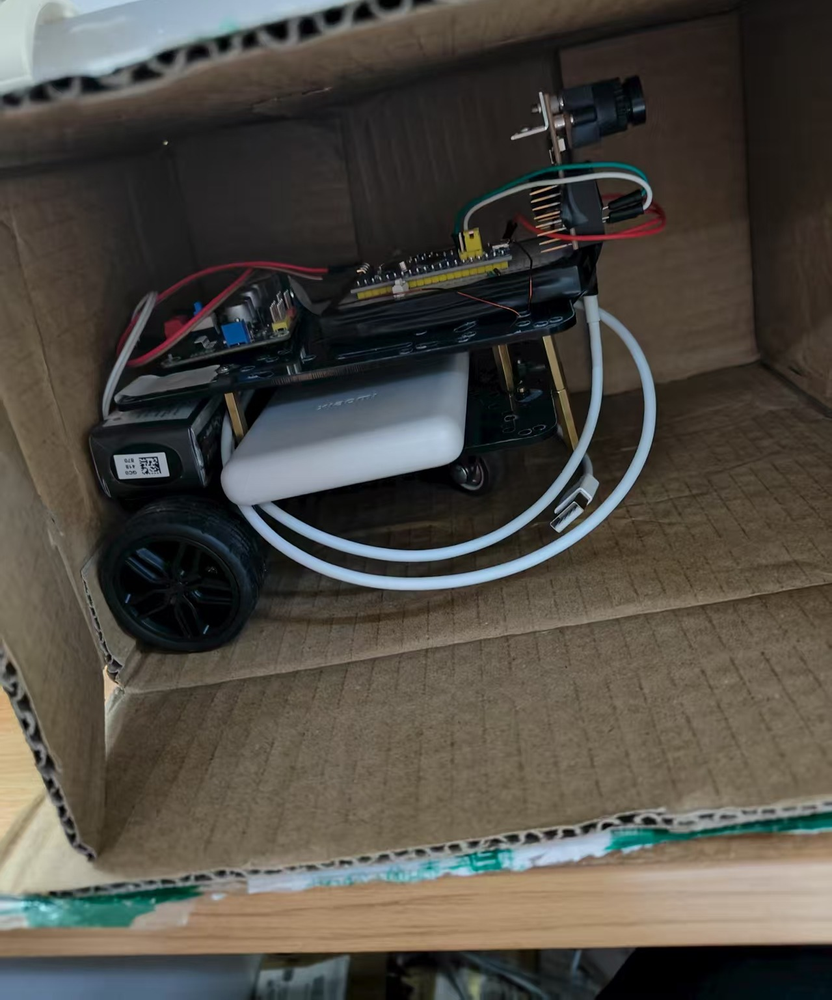
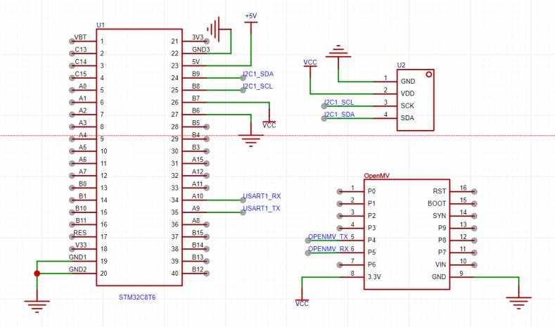
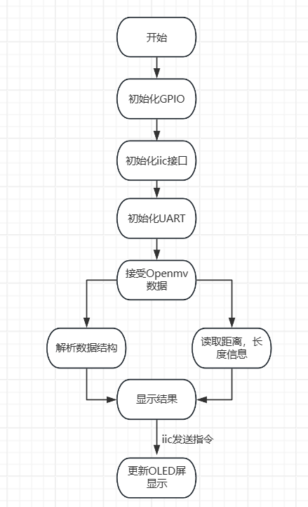
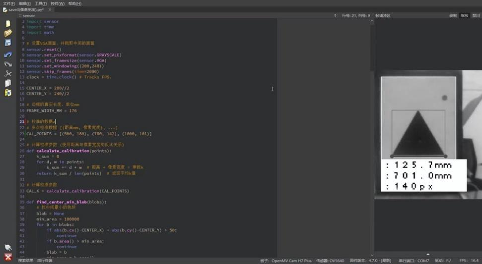
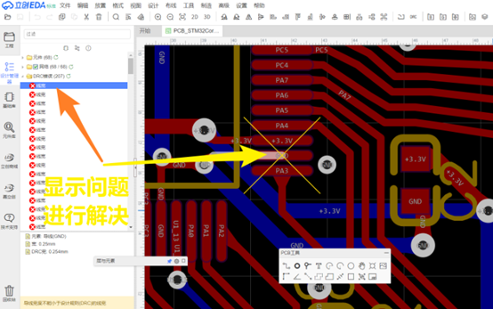
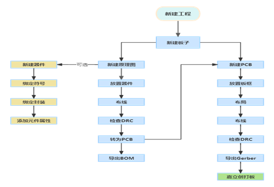
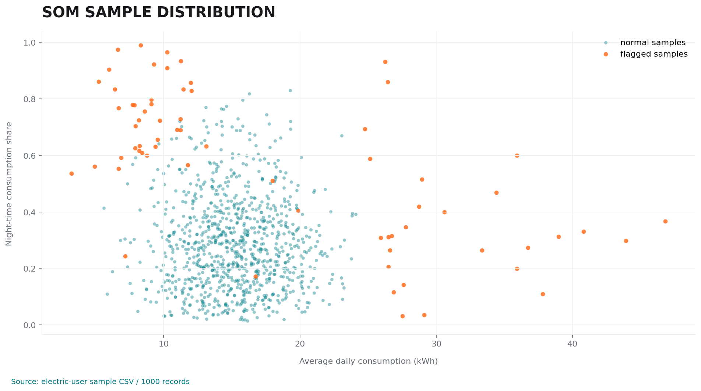
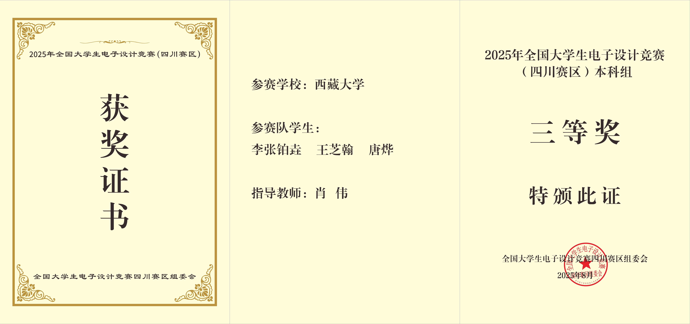
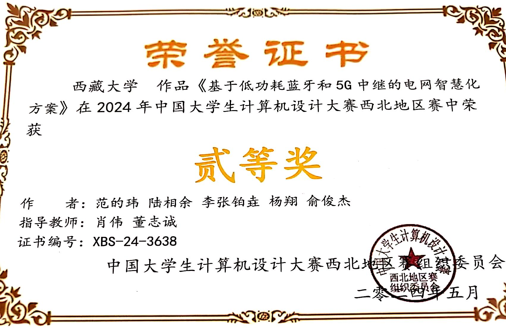

ENGINEERING PROJECT ARCHIVE / 2026
项目，不只展示结果。
还要留下怎么做出来的证据。
我是李张铂垚，通信工程本科生。我的项目横跨电子设计、嵌入式、机器人、计算机设计、SOM 神经网络和 PCB 实践，重点记录我负责的工作、实现的功能与可以复核的过程。

把问题拆成可以测量的环节，再用结果验证每一次改动。
从硬件选型、电路搭建和焊接，到程序编写、信号调试、通信联调与故障排查，我习惯把复杂问题拆成接口、数据和状态，再把过程写成可复现的项目记录。
先明确输入、处理、输出和验证边界。
让硬件、程序和通信在同一条链路上工作。
用实物照片、数据截图、证书和文档说明边界。
我实际参与的工作链路
这些项目不只是“参加过”。我把题目、硬件、程序、数据和展示材料串成可以交付的工程过程。
提取功能约束、输入输出和评分或验证指标。
完成模块选型、接口连接、原理图或实验环境准备。
通过串口、传感器、波形、测试表和现场现象定位问题。
沉淀代码、报告、图片、证书与可复核的项目说明。
SELECTED CASE FILES
项目索引
按项目方向筛选，打开一份档案查看我的参与工作、实现功能和证据状态。
VISIBLE CONTRIBUTION MAP
我在项目里具体做了什么
把项目列表里的关键词展开成工作边界，方便快速判断我做过的硬件、程序、数据和交付工作。
参与小车底盘、传感器、称重模块、STM32、OpenMV、OLED 和 PCB 实物的连接与检查。
围绕数据采集、状态判断、电机控制、串口通信、显示反馈和整机联调定位问题。
在电赛 C 题中参与 OpenMV 图像处理、STM32 二次计算、误差补偿和测试记录。
整理电力用户样本，使用 SOM 进行聚类观察、异常用户分析和结果可视化。
整理竞赛方案 PPT、项目报告和证书材料，并参与学院中规模 PCB 培训的内容组织与实践指导。
PHYSICAL RECORD
技术证据
公开展示真实项目过程；原始代码、完整文档和数据集通过项目 ZIP 归档提供。

硬件装配、控制板连接与现场测量记录，对应项目中的硬件搭建、传感器接入和调试工作。
HARDWARE / MEASUREMENT




REAL DATA EVIDENCE
从样本到异常。
这张图来自电力用户样本 CSV 的字段可视化，用于说明我如何整理数据、观察分布并记录异常分析结果。

可追溯的分析记录
原始数据保留在项目材料中，网页展示的是从样本字段生成的分布图，不直接上传数据集。
COMPETITION / TRAINING
成果记录，也记录参与方式。
竞赛结果不是项目的全部。这里把电子设计大赛、大创、机器人和计算机大赛，以及 SOM 与学院 PCB 培训放在同一份工程档案里，区分个人负责内容和团队成果。


PROJECT ARCHIVE / ZIP
完整材料，从网盘获取。
作品集 ZIP 包含项目说明、原理图、代码和可公开的过程材料。网站页面只展示经过整理的公开证据。